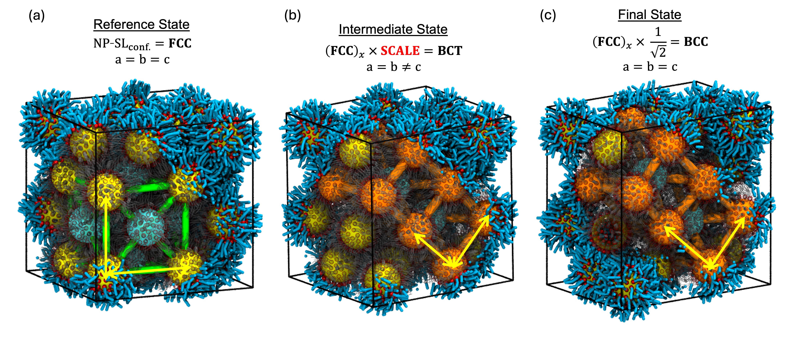
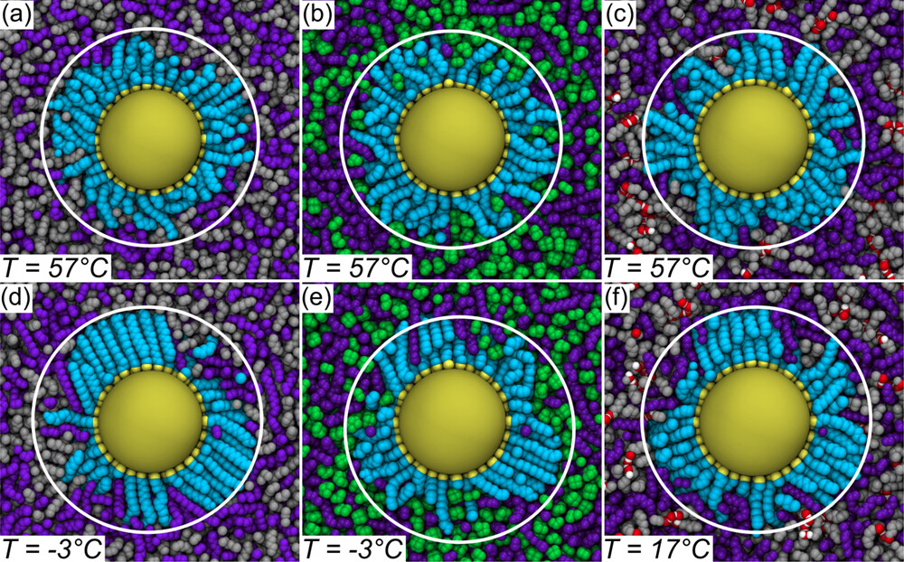

I am a computational materials scientist working on molecular dynamics simulations of nanoparticle systems, with a focus on ligand-mediated interactions, colloidal stability, self-assembly, and free-energy analysis.
My work combines physics-based modeling, large-scale simulation, and Python-based post-processing to understand how nanoscale structure and molecular interactions control material behavior.
I am particularly interested in building reproducible workflows for LAMMPS simulations, trajectory analysis, thermodynamic calculations, and scientific automation for materials research.

Designed computational workflows to investigate the crystallization, stability, and phase behavior of ordered nanocrystal films.
Built coarse-grained models to understand how surface chemistry and structural design parameters influence film formation and stability, mapped kinetic phase diagrams across broad parameter spaces, and developed free-energy calculation protocols to quantify stability landscapes and phase transformations in assembled nanocrystal materials.

Developed molecular dynamics simulation workflows to study the stability, surface organization, and assembly behavior of nanoparticle ink systems.
Established structure–property relationships linking surface chemistry, molecular ordering, and solvent environment to dispersion, aggregation, and formulation behavior, helping explain how nanoscale interactions shape the performance of nanoparticle inks.
Interpreted SAXS and SANS scattering profiles and correlated them with molecular dynamics simulation results to characterize structural ordering in nanoparticle dispersions.
This work combined computational modeling with experimental scattering analysis to improve structural interpretation of complex nanoparticle systems.
Built and analyzed molecular simulation models to investigate nanoscale heat and fluid transport in thin-film and membrane-based systems.
Conducted non-equilibrium molecular dynamics simulations to study thermal transport across interfaces and pressure-driven flow through graphene nanopores, and evaluated the roles of interfacial interactions and slip behavior using Fourier’s law, interfacial thermal resistance, and vibrational density of states analysis.
Developed Python-based analysis pipelines and automated simulation workflows to process trajectories, visualize spatial trends through heat maps, and extract structural and thermodynamic trends from large simulation datasets.
Applied HPC systems, bash scripting, Python, and R to improve workflow efficiency and support large-scale simulation and data analysis campaigns.
Designed CAD models of nanoparticle structures and vertical-axis wind turbine concepts to support visualization, design communication, and engineering interpretation.
For nanoparticle systems, the CAD work supported research demonstrations and prototype development, including 3D-printed models that helped communicate structural ideas more effectively. This work reflects both scientific visualization skills and broader mechanical design experience.
Email: your@email.com
GitHub: github.com/yourusername
LinkedIn: Add LinkedIn link
Google Scholar: Add Google Scholar link
CV: Download CV